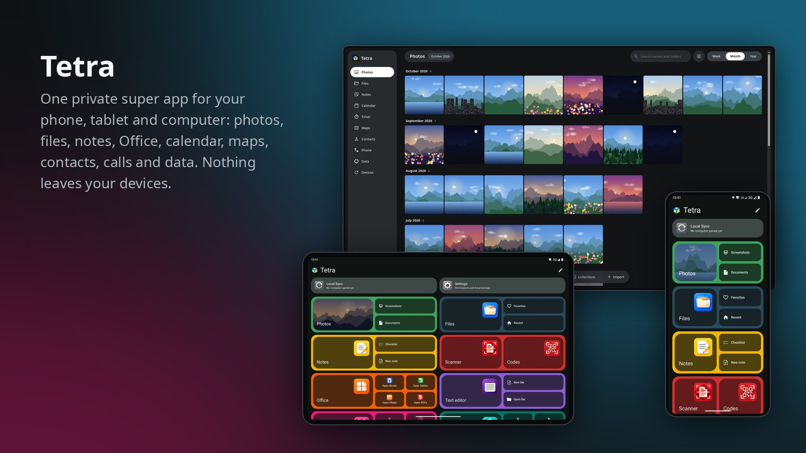

Tetra
One private super app for your phone, tablet and computer. Photos, files, notes, Office, calendar, timers, maps, contacts, calls and data, synced over your own Wi-Fi. Nothing leaves your devices.
Download for AndroidAPK · 0.6.0 beta 1 · Android 11+
Linux AppImage0.6.0 beta 21 · any distro
Linux .debDebian, Ubuntu, Mint
